bakery-rush-1af002-20261122-1028 · playable /home/user/simula-playable-simula-agent/games/generated/bakery-rush.html · 2026-11-22 10:37 UTC| cut | video | score | gate | H | J | judge |
|---|---|---|---|---|---|---|
| a ★ hook-first |
84.9 | ✓ | 89.5 dead air 16% · action 0.354 · hook 1.464 moments 0.919 · arc 1 · 8 shots ✓ core loop · ✓ feature · ✓ progression · ✓ end card |
81.2 loop 9 · features 8.5 human 7.5 · action 8 hook 8 · polish 7.5 · run 8 |
This is a well-paced, clear highlight that opens with an exciting Golden Frenzy hook before demonstrating the core tap-and-upgrade loop. It cleanly showcases major features including Rush Orders, shop progression, and the final call-to-action end card. worst @17s: The second Rush Order is cut short by the end card before it can be completed. | |
| b learn-then-escalate |
84.2 | ✓ | 85.8 dead air 14% · action 0.359 · hook 0.711 moments 0.927 · arc 1 · 7 shots ✓ core loop · ✓ feature · ✓ progression · ✓ end card |
82.8 loop 9 · features 8.5 human 8.5 · action 8 hook 6.5 · polish 9 · run 8 |
A well-paced 20-second highlight that clearly demonstrates the core idle-clicker loop, upgrades, Golden Frenzy, and shop progression, ending on a clean CTA card. The opening two seconds start a bit slow from 1 coin, and failing the Rush Order at 14s slightly dampens the climax. worst @14s: Failing the Rush Order ('ORDER MISSED!') right after unlocking the new shop interrupts the momentum | |
| c feature-montage |
82.4 | ✓ | 84.3 dead air 18% · action 0.347 · hook 0.732 moments 0.916 · arc 1 · 8 shots ✓ core loop · ✓ feature · ✓ progression · ✓ end card |
80.9 loop 9 · features 8 human 8.5 · action 7.5 hook 6.5 · polish 8.5 · run 8 |
A very clear and well-paced highlight that demonstrates the core idle-clicker loop, upgrades, and shop progression naturally. Ending on a missed Rush Order is a minor blemish, but the Golden Frenzy and clean end card make it a strong ad. worst @16s: The 'ORDER MISSED' banner appears right before the end card, ending the gameplay on a failure state. | |
| base_first baseline: first 20 s |
59.9 | ✓ | 62.4 dead air 32% · action 0.288 · hook 0.778 moments 0.772 · arc 0.7 · 2 shots ✓ core loop · ✓ feature · ✗ progression · ✗ end card |
57.9 loop 8.5 · features 5.5 human 7.5 · action 4.5 hook 3.5 · polish 5 · run 4.5 |
The clip clearly demonstrates the core tap-and-upgrade loop with natural human timing, but it opens slowly on a static tutorial prompt. Worse, it cuts off the exact second a Rush Order begins, missing the high-action frenzy and shop progression that would make a strong ad. worst @19.5s: The video cuts off abruptly right as the exciting Rush Order begins, missing the payoff. | |
| base_random baseline: random clips |
50.7 | ✓ | 66.8 dead air 41% · action 0.341 · hook 0.614 moments 0.85 · arc 0.7 · 5 shots ✓ core loop · ✓ feature · ✓ progression · ✗ end card |
37.5 loop 5.5 · features 5 human 4.5 · action 3.5 hook 1.5 · polish 2.5 · run 2.5 |
This highlight starts with 3 seconds of dead air on a static tutorial screen and suffers from confusing jump cuts that bounce backwards between Shop 1/3 and Shop 2/3. The player taps too slowly to complete any Rush Orders and the video ends abruptly without a call to action. worst @0s: The first 3 seconds are a completely static tutorial screen with no action, followed by a jarring jump cut. |
The core tap-to-bake and upgrade loop was clear, allowing the player to progress from Sweet Corner to Bakery Lane. However, a slow initial start, a small target for the Golden Cupcake, and an overly demanding Rush Order target caused repeated failures.
| time | type | severity | issue | suggested fix | evidence | signals |
|---|---|---|---|---|---|---|
| 0:31.4–0:41.8 | frustration | high | Rush Order target (25 cakes in 10s) is too difficult The player activated Golden Frenzy x3 but only reached 11/25 cakes before the 'ORDER MISSED!' fail screen appeared at t=31.4s. After tapping 'Try Again', they only reached 12/25 cakes with 1s left at t=41.8s. | Reduce the Rush Order requirement from 25 cakes to 12-15 cakes in 10s (or extend the timer to 15s) so casual players can complete the order and experience the reward. | 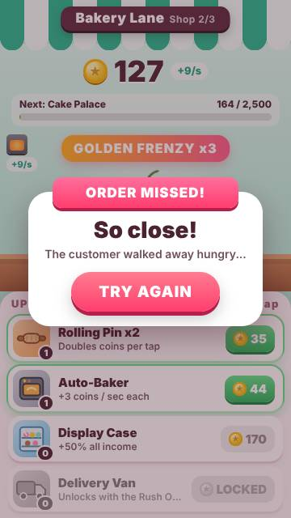 | S3 |
| 0:00.0–0:05.4 | pacing | medium | Slow time to first tap due to lack of initial motion Despite the 'Tap the cake to bake!' tutorial, there was 3.5s of idle time with no on-screen motion, and it took 5.4s for the first tap to register. | Add an animated, pulsing hand pointer directly over the center cake from t=0.0s along with a subtle idle bounce on the cake to prompt immediate interaction. | 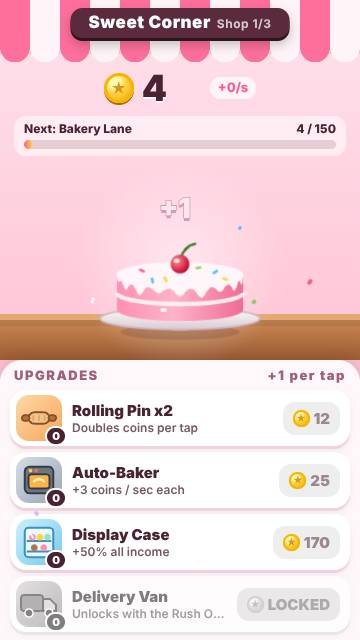 | S1, S2 |
| 0:25.9 | ui | low | Imprecise taps when trying to hit the Golden Cupcake Two imprecise tap slips were recorded at t=25.9s, right as the player was trying to activate the floating Golden Cupcake x3. | Increase the invisible hit-box of the floating Golden Cupcake by 30-50% and slow its travel speed slightly so it is easier to tap during active gameplay. | S4 |
| time | saw | phase | planner | actions (with human reaction time) | notes | cost |
|---|---|---|---|---|---|---|
| 0:02.0 turn 1 | 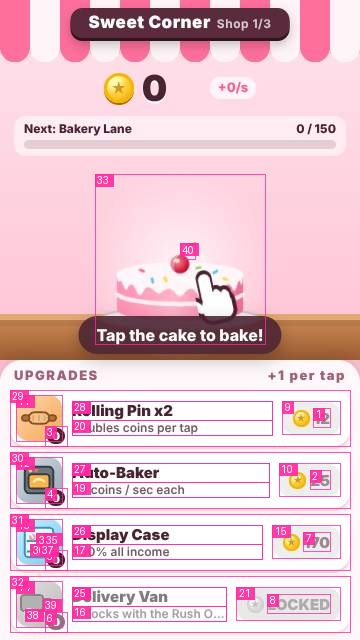 |
tutorial decider: tutorial 73% clarity 98% |
sees: Bakery clicker game, tutorial 'Tap the cake to bake!' progress: Initial screen |
0:03.6 tap “Bake a cake: tap to earn coins” Tap cake to bake (+1643 ms) 0:04.0 tap “Bake a cake: tap to earn coins” Tap cake to bake (+238 ms) 0:04.4 tap “Bake a cake: tap to earn coins” Tap cake to bake (+250 ms) 0:04.9 tap “Bake a cake: tap to earn coins” Tap cake to bake (+318 ms) |
Tap cake (target 33) to earn coins (+1/tap). Upgrades: Rolling Pin x2 (12), Auto-Baker (25), Display Case (170). Goal: 150 for Bakery Lane. | 4.2s $0.0080 |
| 0:05.4 turn 2 | gameplay decider: gameplay 60% clarity 95% last input worked: 100% |
sees: Sweet Corner bakery clicker, 4/150 coins progress: Earned 4 coins from 4 taps |
0:05.8 tap “Bake a cake: tap to earn coins” Tap cake to earn coin (+375 ms) 0:06.1 tap “Bake a cake: tap to earn coins” Tap cake to earn coin (+188 ms) 0:06.5 tap “Bake a cake: tap to earn coins” Tap cake to earn coin (+247 ms) 0:06.8 tap “Bake a cake: tap to earn coins” Tap cake to earn coin (+278 ms) |
Tap cake (target 33) to earn coins (+1/tap). Upgrades: Rolling Pin x2 (12), Auto-Baker (25), Display Case (170). Goal: 150 for Bakery Lane. | 2.9s $0.0070 | |
| 0:07.4 turn 3 | 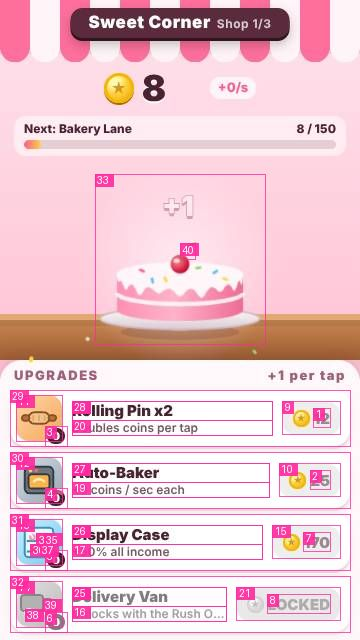 |
gameplay decider: gameplay 82% clarity 86% last input worked: 99% |
sees: Sweet Corner bakery, 8 coins, cake and upgrades visible progress: Earned 4 more coins (now 8/150) |
0:07.8 tap “Bake a cake: tap to earn coins” Tap cake to earn coin (9) (+452 ms) 0:08.3 tap “Bake a cake: tap to earn coins” Tap cake to earn coin (10) (+286 ms) 0:08.9 tap “Bake a cake: tap to earn coins” Tap cake to earn coin (11) (+417 ms) 0:09.3 tap “Bake a cake: tap to earn coins” Tap cake to earn coin (12) (+276 ms) |
Tap cake (target 33) to earn coins (+1/tap). Upgrades: Rolling Pin x2 (12), Auto-Baker (25), Display Case (170). Goal: 150 for Bakery Lane. Need 4 more taps for Rolling Pin x2. | 4.6s $0.0083 |
| 0:10.0 turn 4 | 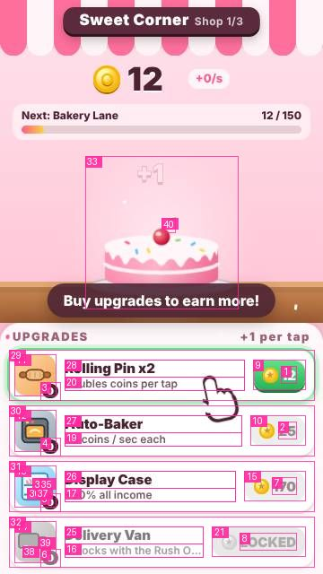 |
gameplay decider: tutorial 83% clarity 92% last input worked: 98% |
sees: 12 coins, Rolling Pin x2 upgrade available progress: Reached 12 coins, Rolling Pin x2 is now affordable |
0:10.5 tap “Buy Rolling Pin x2, level 0, costs 12 co” Buy Rolling Pin x2 upgrade (+485 ms) 0:10.9 tap “Bake a cake: tap to earn coins” Tap cake for +2 coins (+256 ms) 0:11.2 tap “Bake a cake: tap to earn coins” Tap cake for +2 coins (+245 ms) 0:11.6 tap “Bake a cake: tap to earn coins” Tap cake for +2 coins (+195 ms) |
Tap cake (target 33) to earn coins. Upgrades: Rolling Pin x2 (12), Auto-Baker (25), Display Case (170). Goal: 150 for Bakery Lane. Buying Rolling Pin x2 now. | 3.6s $0.0074 |
| 0:12.2 turn 5 | 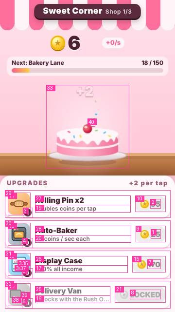 |
gameplay decider: gameplay 61% clarity 92% last input worked: 99% |
sees: Sweet Corner Shop 1/3, 6 coins, +2 per tap, 18/150 to Bakery Lane progress: Bought Rolling Pin x2, now earning +2 per tap |
0:12.5 tap “Bake a cake: tap to earn coins” Tap cake for +2 coins (+251 ms) 0:13.0 tap “Bake a cake: tap to earn coins” Tap cake for +2 coins (+358 ms) 0:13.4 tap “Bake a cake: tap to earn coins” Tap cake for +2 coins (+277 ms) 0:13.9 tap “Bake a cake: tap to earn coins” Tap cake for +2 coins (+355 ms) |
Tap cake (target 33) for +2 coins. Upgrades: Rolling Pin x2 (35), Auto-Baker (25), Display Case (170). Goal: 150 for Bakery Lane. Saving 25 for Auto-Baker. | 3.4s $0.0073 |
| 0:14.5 turn 6 | 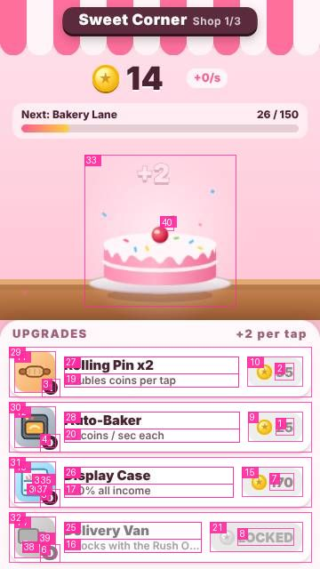 |
gameplay decider: gameplay 90% clarity 90% last input worked: 100% |
sees: Sweet Corner, 14 coins, 26/150 to Bakery Lane progress: Earned 12 coins from 6 taps, now at 14 coins |
0:14.7 tap “Bake a cake: tap to earn coins” Tap cake for +2 coins (+231 ms) 0:15.1 tap “Bake a cake: tap to earn coins” Tap cake for +2 coins (+219 ms) 0:15.5 tap “Bake a cake: tap to earn coins” Tap cake for +2 coins (+258 ms) 0:16.0 tap “Bake a cake: tap to earn coins” Tap cake for +2 coins (+370 ms) |
Tap cake (target 33) for +2 coins. Upgrades: Rolling Pin x2 (35), Auto-Baker (25), Display Case (170). Goal: 150 for Bakery Lane. Saving 25 for Auto-Baker. | 4.2s $0.0075 |
| 0:16.7 turn 7 | gameplay decider: gameplay 86% clarity 92% last input worked: 100% |
sees: Sweet Corner shop, 22 coins, 34/150 to Bakery Lane progress: Earned 12 more coins from tapping cake, now at 22 coins |
0:17.4 tap “Bake a cake: tap to earn coins” Tap cake for +2 coins (24) (+709 ms) 0:17.9 tap “Bake a cake: tap to earn coins” Tap cake for +2 coins (26) (+371 ms) 0:18.3 tap “Buy Auto-Baker, level 0, costs 25 coins.” Buy Auto-Baker for 25 coins (+328 ms) 0:18.8 tap “Bake a cake: tap to earn coins” Tap cake for +2 coins (+321 ms) |
Tap cake (target 33) for +2 coins. Upgrades: Rolling Pin x2 (35), Auto-Baker (25), Display Case (170). Goal: 150 for Bakery Lane. Buying Auto-Baker now. | 3.5s $0.0075 | |
| 0:19.5 turn 8 | 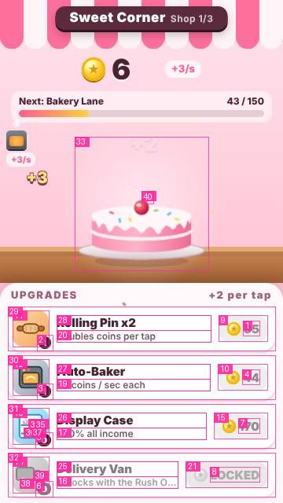 |
gameplay decider: gameplay 77% clarity 87% last input worked: 94% |
sees: Gameplay: 6 coins, +3/s, 43/150 to Bakery Lane progress: Bought Auto-Baker, now earning +3/s |
0:19.8 tap “Bake a cake: tap to earn coins” Tap cake for +2 coins (+304 ms) 0:20.2 tap “Bake a cake: tap to earn coins” Tap cake for +2 coins (+224 ms) 0:20.7 tap “Bake a cake: tap to earn coins” Tap cake for +2 coins (+350 ms) 0:21.2 tap “Bake a cake: tap to earn coins” Tap cake for +2 coins (+360 ms) |
Tap cake (target 33) for +2 coins. Upgrades: Rolling Pin x2 (35), Auto-Baker (44), Display Case (170). Goal: 150 for Bakery Lane. | 3.0s $0.0074 |
| 0:21.9 turn 9 | 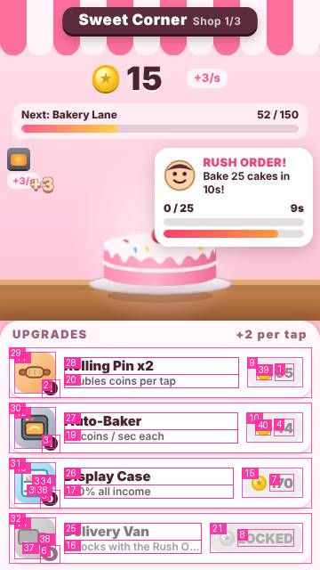 |
gameplay decider: gameplay 85% clarity 71% last input worked: 98% |
sees: Rush Order active: Bake 25 cakes in 10s (0/25, 9s left), 15 coins progress: Auto-Baker bought, Rush Order started |
0:22.7 tap Bake cake for Rush Order (+784 ms) 0:23.1 tap Bake cake for Rush Order (+311 ms) 0:23.5 tap Bake cake for Rush Order (+269 ms) 0:23.9 tap Bake cake for Rush Order (+184 ms) |
Rush Order: Bake 25 cakes in 10s! Tap cake at [465, 420] rapidly. | 3.7s $0.0077 |
| 0:24.3 turn 10 | 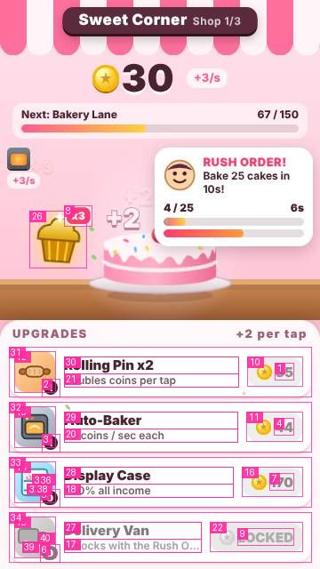 |
gameplay decider: gameplay 92% clarity 82% last input worked: 100% |
sees: Rush Order 4/25 (6s left), Golden Cupcake x3 available progress: Baked 4 cakes for Rush Order |
0:24.7 tap “Golden cupcake: tap for a 3x frenzy” Activate 3x frenzy golden cupcake (+364 ms) 0:25.1 tap Bake cake for Rush Order (+304 ms) 0:25.6 tap Bake cake for Rush Order (+288 ms) 0:25.9 tap Bake cake for Rush Order (+216 ms) slipped |
Rush Order: Bake 25 cakes in 10s (6s left, 4/25). Tap Golden Cupcake (target 26) for 3x frenzy, then tap cake at [465, 420] rapidly. | 4.9s $0.0076 |
| 0:26.5 turn 11 | 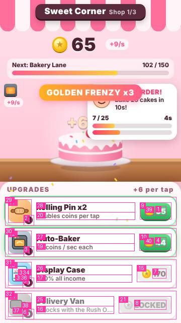 |
gameplay decider: gameplay 79% clarity 86% last input worked: 99% |
sees: Sweet Corner shop, 65 coins, Golden Frenzy x3 active, Rush Order 7/25 with 4s left progress: Golden Frenzy x3 activated, Rush Order at 7/25. |
0:27.1 tap Bake cake for Rush Order (+553 ms) 0:27.4 tap Bake cake for Rush Order (+234 ms) 0:27.8 tap Bake cake for Rush Order (+197 ms) 0:28.1 tap Bake cake for Rush Order (+214 ms) |
Rush Order: Bake 25 cakes in 10s (4s left, 7/25). Golden Frenzy x3 active. Tap cake at [465, 420] rapidly. | 4.6s $0.0075 |
| 0:28.7 turn 12 | 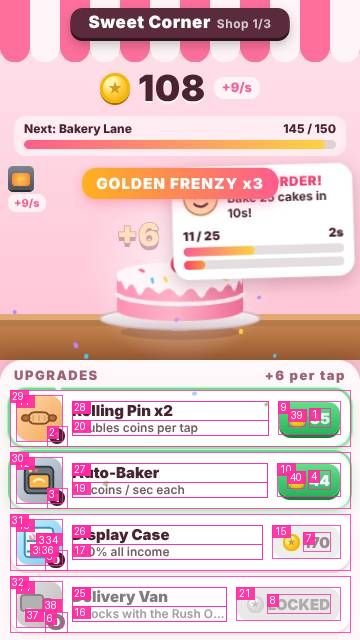 |
gameplay decider: gameplay 85% clarity 82% last input worked: 100% |
sees: gameplay with Rush Order (11/25, 2s left), 108 coins, Next: Bakery Lane 145/150 progress: tapped cake to 11/25 |
0:29.0 tap Bake cake (+355 ms) 0:29.6 tap Bake cake (+386 ms) 0:30.0 tap Bake cake (+238 ms) 0:30.4 tap Bake cake (+329 ms) |
Rush Order almost expired (2s left, 11/25). Next: Bakery Lane 145/150. Tap cake to reach 150. | 3.4s $0.0074 |
| 0:31.4 turn 13 | 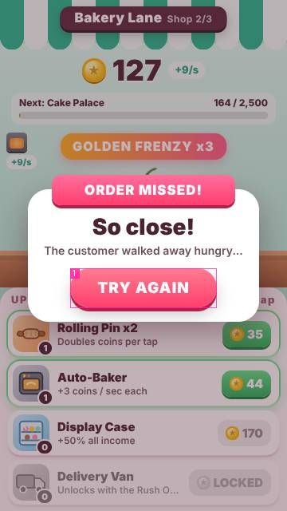 |
fail decider: fail 65% clarity 92% last input worked: 71% |
sees: Order missed popup with Try Again button progress: Reached Bakery Lane Shop 2/3, but Rush Order expired |
0:32.4 tap “Try again” Tap Try Again button (+1042 ms) | Order missed popup. Tap Try Again to continue. | 2.8s $0.0043 |
| 0:33.5 turn 14 | 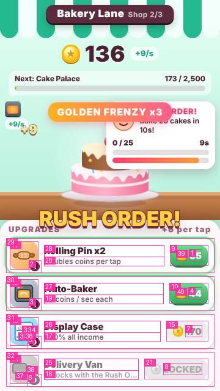 |
gameplay decider: gameplay 76% clarity 74% last input worked: 99% |
sees: Rush Order active: 0/25 cakes, 9s left progress: Try Again worked, Rush Order restarted |
0:35.2 tap Bake cake (+1660 ms) 0:35.8 tap Bake cake (+414 ms) 0:36.3 tap Bake cake (+361 ms) 0:36.7 tap Bake cake (+304 ms) |
Need 25 taps on cake in 9s for Rush Order. Tapping cake rapidly. | 5.0s $0.0080 |
| 0:37.1 turn 15 | 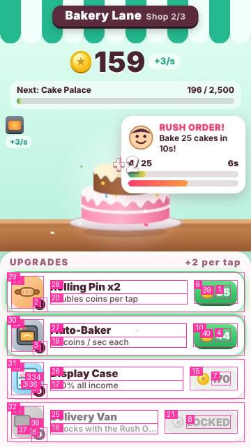 |
gameplay decider: gameplay 84% clarity 76% last input worked: 84% |
sees: Bakery Lane gameplay, Rush Order active (4/25 cakes, 6s left), 159 coins progress: Tapped cake 4 times, Rush Order at 4/25 |
0:37.5 tap Bake cake (+401 ms) 0:37.9 tap Bake cake (+210 ms) 0:38.3 tap Bake cake (+238 ms) 0:38.7 tap Bake cake (+217 ms) |
Need 25 taps on cake in 10s for Rush Order (at 4/25, 6s left). Tapping cake rapidly. | 14.9s $0.0072 |
| 0:39.1 turn 16 | 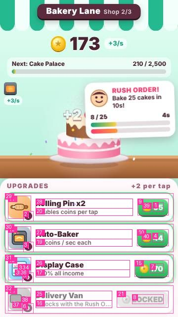 |
gameplay decider: gameplay 87% clarity 83% last input worked: 97% |
sees: Rush Order at 8/25 with 4s left, 173 coins progress: Baked 4 more cakes (8/25) |
0:39.8 tap Bake cake (+643 ms) 0:40.1 tap Bake cake (+275 ms) 0:40.7 tap Bake cake (+418 ms) 0:41.1 tap Bake cake (+260 ms) |
Need 25 taps on cake in 10s for Rush Order (at 8/25, 4s left). Tapping cake rapidly. | 7.6s $0.0069 |
| 0:41.8 turn 17 | gameplay decider: gameplay 92% clarity 89% last input worked: 100% |
sees: Bakery Lane shop 2/3, 189 coins, Rush Order 12/25 with 1s left, upgrades available progress: Tapped cake to 12/25, coins at 189 |
0:42.4 tap Bake cake (+588 ms) slipped 0:42.7 tap Bake cake (+200 ms) 0:43.1 tap “Buy Display Case, level 0, costs 170 coi” Buy Display Case (+50% all income) (+195 ms) |
Rush Order at 12/25 with 1s left (likely will expire). Have 189 coins, can buy Display Case (170 coins, +50% all income). | 4.1s $0.0083 | |
| 0:44.2 turn 18 | 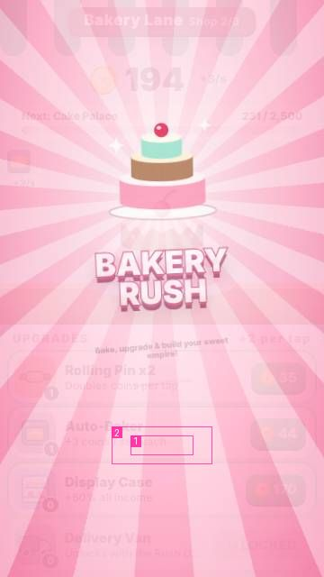 |
end_card decider: reward 24% clarity 62% last input worked: 46% |
sees: End card showing Bakery Rush logo and Play Now button progress: Reached the end card |
0:47.1 tap “Play now” Tap Play Now button on end card (+400 ms) | Game ended and showed the end card. | 3.3s $0.0043 |
Files: raw.mp4 · highlight.mp4 · candidates/ · moments.json · game_model.json · edl_*.json · eval.json · friction.json/.md · plans.jsonl · actions.jsonl · observations.jsonl · decisions in plans.jsonl · ledger.jsonl · trace.jsonl · obs/